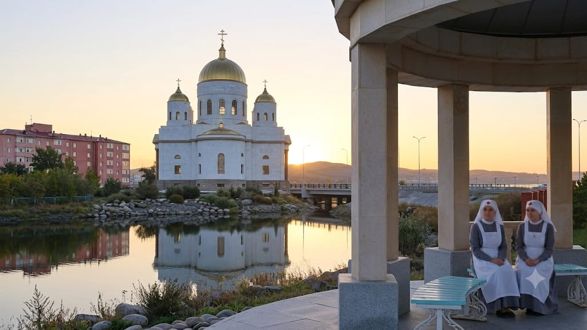
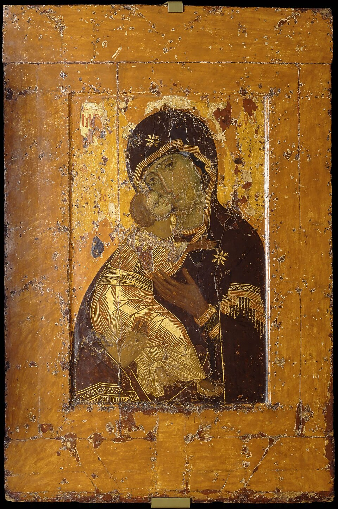

Служение любви, сострадания и милосердия к ближним в г. Кокшетау


Православное сестричество милосердия в городе Кокшетау объединяет людей, готовых посвятить свое время, силы и душевное тепло помощи тем, кто оказался в немощи и трудных жизненных обстоятельствах. Наше служение совершается по образу христианской любви и деятельного сострадания.
Находясь под молитвенным покровом иконы Божией Матери «Владимирская», сестры стремятся приносить утешение, духовную и материальную поддержку каждому, кто нуждается в заботе и добром слове.
Духовная и практическая поддержка тяжелобольных людей, уход, организация таинств Исповеди и Причастия для находящихся на лечении.
Патронажная помощь на дому одиноким престарелым гражданам, доставка продуктов, лекарств и помощь в бытовых нуждах.
Помощь многодетным, малообеспеченным семьям и тем, кто попал в кризисную жизненную ситуацию, вещами и продуктами первой необходимости.
Дело милосердия нуждается в поддержке каждого отзывчивого сердца. Вы можете присоединиться к сестричеству в качестве добровольца, помочь продуктами, средствами ухода или внести посильное пожертвование на дела благотворительности.